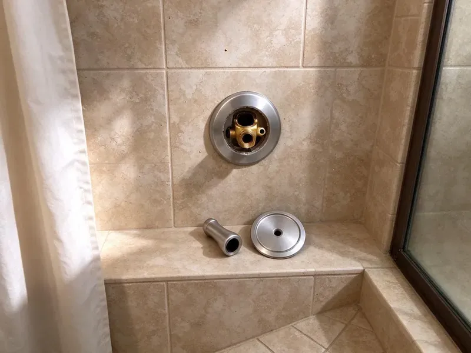

Urinal Installation in Shelburne, VT
Need a new urinal installed at your business or home in Shelburne, VT? CKV Plumbing offers reliable, code-compliant solutions.
- Fast Commercial Scheduling
- Prompt, reliable service
- Local Shelburne pros
- Satisfaction guaranteed
Expert Urinal Installation Services in Shelburne, VT.
Get in touch with us today for a free estimate on your next urinal project.
Commercial and Residential Urinal Installation in Shelburne, VT
CKV Plumbing helps Shelburne property owners choose between manual flushometers, sensor valves and waterless urinals based on traffic and water costs. With rising water and sewer rates, low-flow and waterless models are in demand. We handle the plumbing so the fixture performs and stays easy to maintain.
Our expertise includes:
- Precise rough-in and drain connections
- Code-compliant fixture mounting
- Set wall carriers and blocking for wall-hung urinals

Additional Bathroom Plumbing Services in Shelburne, VT
From toilets to showers, our bathroom plumbing team in Shelburne, VT repairs, installs, and replaces every fixture with clean, code-compliant work.


Customers
Why Choose CKV Plumbing for Urinal Installation in Shelburne, VT?
Choosing the right professionals for urinal installation means your system functions properly and meets all local Vermont plumbing codes. Our team has broad experience with the demands of these fixtures.
- Cleanliness, Proper installation prevents common issues like splashing and odor, keeping a hygienic environment.
- Code Compliance, We ensure all urinal installations meet Vermont plumbing codes for safety and function.
- Water Savings, Low-flow and waterless options cut water use in busy restrooms.
Citywide Coverage
From downtown commercial spaces to suburban residential properties, our team covers all areas of Shelburne for professional urinal installation. We're dedicated to bringing reliable plumbing solutions right to your doorstep.
Experienced Team
Our plumbers have installed urinals from American Standard, Kohler, Toto, Sloan and Zurn. They know the rough-in dimensions and flush valve settings for each.
Safety-First Approach
We secure every fixture to a rated carrier or solid blocking so it cannot pull away from the wall. Supply lines include a vacuum breaker on flushometers to protect the water supply.
Trusted Certified Shelburne Plumbing Services Professionals
At CKV Plumbing, we take pride in providing licensed, certified plumbing services throughout Shelburne, VT. Backed by recognized industry credentials, our experienced plumbers combine technical skill with genuine customer care. Whether it is repair, installation, or maintenance, we follow strict safety and quality standards to deliver lasting results you can trust.
Call Us Now PHCC Plumbing Contractor Recognition
PHCC Plumbing Contractor Recognition Better Business Bureau (BBB) Accreditation
Better Business Bureau (BBB) Accreditation Angi Certified Pro
Angi Certified Pro ISO 9001 Quality Management Certification
ISO 9001 Quality Management CertificationReliable Urinal Installation Services in Shelburne, VT
Sensor Urinal Installation in Shelburne, VT
Touchless sensor flush valves improve hygiene and reduce wasted flushes. We install battery or hardwired sensor valves and set the detection range for each fixture. Hardwired units may need an electrician for the power supply, which we can coordinate. Sensor valves are standard in schools, gyms and healthcare offices.

Urinal Rough-In and New Restroom Plumbing in Shelburne
For new restrooms or tenant improvements, we rough in the waste, vent and supply lines before walls are closed. We set the outlet height and spacing to the fixture's spec sheet and inspection requirements. Planning ahead avoids expensive wall rework later. We coordinate with your contractor on the schedule.
Flushometer Urinal Installation in Shelburne
Manual flushometer urinals are the standard in many commercial restrooms. We install Sloan Royal or Zurn flush valves with the correct gallons-per-flush rating, typically 0.125 to 0.5 gpf. Each valve includes a vacuum breaker and stop. We adjust the flush to clear the bowl without wasting water.
Commercial Urinal Installation in Shelburne
CKV Plumbing provides specialized urinal installation for commercial properties, including offices, restaurants, and public facilities. We understand the need for durable, high-traffic solutions and can install a variety of models, from standard flush to waterless urinals. Our team ensures disruption to your business operations to a minimum during the installation process, focusing on efficiency and compliance with commercial building codes.
Urinal Installation Cost Factors in Shelburne, VT
Costs depend on the fixture type, whether a carrier is needed, and how far the drain and supply must run. Sensor valves cost more than manual valves, and waterless urinals have higher upfront prices but save water over time. Replacements using existing lines are the least expensive. We provide a line-item quote that shows each cost.
Drainage & Venting for Urinals in Shelburne, VT
Correct drainage and venting are critical for any urinal installation to prevent clogs, odors, and slow draining. CKV Plumbing makes sure that all urinal installations in Shelburne, VT have properly sized and sloped drain lines, as well as adequate vent connections to the main plumbing stack. This careful approach guarantees strong performance and long-term reliability of your new urinal system.
Urinal Brands We Install in Shelburne, VT
CKV Plumbing has experience installing a broad range of popular urinal brands, including American Standard, Kohler, Zurn, Sloan, and Toto. We are familiar with the specific installation requirements and components of each manufacturer. Whether you have a preferred brand or need guidance on selecting the best urinal for your needs in Shelburne, VT, our team can provide expert advice and professional installation.

Sloan Urinal System Installation in Shelburne, VT
Sloan is a leading brand in commercial plumbing, known for its durable and reliable urinal flushometers and fixtures. CKV Plumbing handles Sloan urinal system installation in Shelburne, VT. Our plumbers are familiar with Sloan's specific requirements, including sensor-activated flush valves and complex water supply connections. We make sure that your Sloan system is installed correctly for strong performance and a long service life, which is crucial in high-traffic environments.
Urinal Installation Near Me in Shelburne, VT
Our commitment to the Shelburne community means we're always ready to dispatch skilled plumbers to your location. Whether it's a new construction project or a restroom upgrade, CKV Plumbing delivers professional urinal installation with a focus on local service and customer satisfaction.
Our crews know local permit processes and inspection expectations for commercial restrooms. That speeds up approval for new fixtures and remodels. You get one team for planning, installation and the final test.
CKV Plumbing at a Glance
- Fully licensed plumbing team covering Shelburne, VT
- Same-day appointments and 24/7 emergency response
- Upfront, flat-rate pricing before work begins
- 4.8-star rated by 553+ Vermont customers
Shelburne Map
Shelburne Information
- Population
- 6,178
- Area codes
- Local
- Service area
- Shelburne and communities within 40 miles
- Nearby
- South Burlington, Burlington, Winooski, Essex Junction
For properties in Shelburne, VT, proper urinal installation is vital to handle local water quality and deliver long-term, leak-free operation in both commercial and residential settings.
Expert Services
Trust our professionals for reliable CKV Plumbing solutions in Shelburne, VT.
Our Specialized Plumbing Services in Shelburne, VT
At CKV Plumbing, we provide a complete range of plumbing services across Shelburne, VT. From leak detection to full system installations, our team ensures fast, precise, and affordable service for both residential and commercial properties. Explore our core services below:


How Our Urinal Installation Process Works in Shelburne, VT
Our urinal installation process in Shelburne, VT is designed to be straightforward and efficient, ensuring a high-quality outcome with minimal hassle.
Request a Quote
Call (802) 209-5139 to tell us about your restroom and preferred fixture. We schedule a site visit to check drains, supply and wall structure.
Plan the Install
We confirm fixture type, height and permit needs. You get a written quote and a scheduled install date.
Install and Test
We set the carrier, mount the urinal and connect the flush valve. Then we test flush, drainage and seals before handing it over.
Frequently Asked Questions About Urinal Installation in Shelburne
The cost for urinal installation in Shelburne, VT can range from $400 to $1,200, depending on the type of urinal, complexity of plumbing modifications, and whether it's a new installation or a replacement. This price usually includes labor and basic materials, but highly specialized units or extensive rough-in work can increase the overall cost.
Switching from a 1 gpf urinal to a 0.125 gpf model saves most of the water per flush. In a busy restroom that adds up to many thousands of gallons a year.
In many cases, a plumbing permit is required for new urinal installations or significant plumbing modifications in Shelburne. CKV Plumbing can help you understand the specific permit requirements for your project and ensure all work complies with local building codes.
While it might seem like a way to save money, urinal installation involves precise plumbing connections, proper venting, and secure mounting that are best handled by a professional. Incorrect installation can lead to leaks, odors, and expensive repairs down the line, making professional service a worthwhile investment.
For commercial settings, look for durability, water efficiency (like low-flow or waterless models), easy maintenance, and ADA compliance if applicable. Brands like Sloan and Zurn are popular for their sturdy commercial-grade fixtures and flushometers.
A washdown urinal uses a simple flushing action to rinse the bowl, relying on gravity and the slope of the drain. A siphonic urinal creates a siphonic action during flushing, which pulls waste more strongly down the drain, offering more effective waste removal and usually better odor control.
Most standard urinal installations or replacements can be done within 2 to 4 hours. However, if new plumbing lines need to be run, or if there are significant structural modifications required, the process could take a full day or more.
They can be, especially in water-conscious buildings. They need regular cartridge changes and correct drain installation to prevent odor and buildup.
What People Are Saying About Our Plumbing Experts?

Robert G.
The trenchless sewer replacement saved our front yard. They walked us through the camera inspection footage first so we knew exactly what we were paying for.
Sewer Line Replacement · South Burlington, VT
Sofia M.
Two new toilets installed in one visit, no mess left behind, and the tech even adjusted a faucet he noticed was dripping. Fair pricing and really friendly.
Toilet Installation · Middlebury, VT
Patricia H.
We had a slab leak that two other companies could not find. CKV Plumbing located it in under an hour, explained our options, and the price matched the quote to the dollar.
Slab Leak Repair · Essex Junction, VT
Mark T.
When our office needed drain cleaning, CKV Plumbing provided quick, reliable service. The plumber arrived on time and made sure every drain flowed perfectly before leaving. Very satisfied.
Drain Cleaning · Burlington, VT
Emily R.
I called CKV Plumbing for plumbing repair, and the technician was fast, polite, and thorough. They explained the problem clearly and fixed it the same day. I will definitely hire them again. Highly recommended!
Plumbing Repair · St. Albans, VT
Daniel K.
A pipe burst at 11 pm and they actually answered. The plumber showed up within the hour, shut everything down, and had us back to normal the next morning. Could not ask for more.
Emergency Plumbing · Burlington, VT